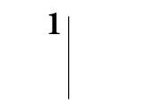
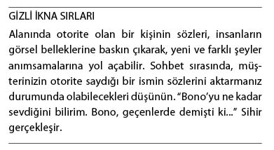
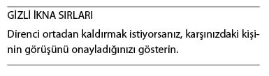

Gizli İkna Zihinde Başlar
İnsan beyninin işleyişi ve düşünce biçimimiz hakkında milyonlarca söz söylenmiş, milyonlarca fikir ve teori geliştirilmiştir. Ancak, kesin olan bir şey vardır: Birilerini sizin gibi düşünme konusunda ikna etmek istiyorsanız, zihninizi onlarınkiyle aynı boyuta taşımalısınız. Başarılı bir ikna; ancak, anlamların, duyguların, anlayışların bütünleştiği, “zihinlerin tek bir potada eridiği” ortamlarda mümkün olabilir.
Peki, zihinleri tek bir potada eritmeyi nasıl başaracağız? Diğer insanları kendi düşünce biçimimizi benimsemeye ikna etme konusunda nasıl ustalaşacağız? Bu sorunun yanıtını bulabilmek için öncelikle karşımızdaki insanı motive eden ve harekete geçiren şeyleri anlamamız gerekir. Bu bilgi sayesinde, düşüncelerinizi ve taleplerinizi, karşı tarafın kolaylıkla anlayabileceği ve sorgulamadan kabulleneceği bir şekle sokabilirsiniz. Bu yolla, karşınızdaki insanlar, sizi kendilerinden biri gibi göreceği için, kendilerini taleplerinize uyum göstermeye mecbur hissedecektir.
Başlamadan önce, “gizli” ve “ikna” sözcüklerinin ne anlama geldiğine bir göz atalım. Bu iki güçlü sözcüğün bir araya gelişinden öğrenilebilecek çok şey vardır. Şimdi her birinin, ayrı ayrı ne anlama geldiğine bakalım.
Gizli (sıfat): Başkalarından saklanan, duyurulmayan, görünmez.
İkna (isim): Bir konuda birinin inanmasını sağlama, inandırma, kandırma.
İkna etmek (isim): İnandırmak, kandırmak.
O halde, tanım itibariyle, gizli şeyler, göz önünde değildir. Saklanır, gizlenirler. Bu tanımı, bir insanı bir şeye ikna etme eylemiyle birleştirdiğimizde, hedeflenen kişi tarafından fark edilmeyen ikna eylemiyle karşılaşırız.
Bu kitabın amacı itibariyle, Gizli İkna Taktikleri, insan zihni faktörünü devre dışı bırakarak, mesajı alan kişinin bu süreçten haberdar olmamasını sağlamaya yöneliktir. Bu yolla hem direnç hem de tepkiler engellenir. Bunu sağlamanın yolu, gönderilen mesajın, alıcı kişi tarafından, değerlendirilmeden ve sorgulanmadan kabul edilmesini sağlamaktır.
Kimi zaman Gizli İkna Taktikleri, “durumun” yönlendirilmesine ve yönetilmesine yöneliktir. Karşınızdaki kişinin ruh hali nedir? Bu kitabı bitirdiğinizde bu sorunun yanıtını verebilecek duruma geleceksiniz.
Örneğin; satış ortamında, karşınızdaki kişinin ürünlerinizi ve hizmetlerinizi satın alması şart değildir. Satın alma işlemi Gizli İkna Taktikleri’nin gerçekleştiğinin göstergesi sayılmamalıdır. Parası olmayan bir kişi, kolaylıkla ikna edilerek satın almaya karar vermesi sağlanabilir; ancak, sadece parası olmadığı için de satın alma işlemi gerçekleşmemiş olabilir.
Etik Hakkında Bir Çift Söz
Birçok insan, birilerini bir şey yapmaya “ikna etmenin”, etik olup olmadığını soruyor. Bu sorunun yanıtı kısaca, “evet”tir. Bu işlem etik olmakla kalmaz, aynı zamanda da gereklidir. Ekonomimizin (ailemiz ve işimiz) varlığını sürdürebilmesi, insanların, satın almaya, denemeye, oy kullanmaya, yataklarını toplamaya, kapıları kapatmaya, katkıda bulunmaya ikna edilmesine bağlıdır. Her gün, bilinçli ya da bilinçsiz, milyonlarca iletişim mesajı alınır ve verilir. Bütün bunların amacı, sizi ve beni birtakım konularda harekete geçirmektir.
İşin etik boyutu, başka birini ikna etmeye çalışan insana kalmıştır. Yaptığımız araştırma sırasında, yüzlerce özel ikna tekniği ortaya çıkardık. Hepsi de etkili teknikler... Etik şekilde ve sorumluluk bilinci içerisinde kullanıldıklarında, herkesin kazançlı çıkmasını sağlayan teknikler...
Önerinin Gücü Algıyı Değiştirir
Gizli İkna Taktikleri, bir anlamda, müşterilerinizin ve iş ortaklarınızın düşünce biçimini, onlara fark ettirmeden değiştirmeye yöneliktir.
Müşterinizin düşünce biçimini değiştirmede kullanabileceğimiz en etkili araçlardan biri, doğru sözcükleri kullanabilmektir. Doğru zamanda kullanılan doğru sözcükler zihinleri ve yaşamları değiştirebilir.
Soru Şeklinde Kullanılan Doğru Sözcükler Düşünceyi Yönlendirebilir
1970’li yıllarda, dünyanın en önemli hafıza araştırmacılarından biri olan Elizabeth Loftus tarafından gerçekleştirilen bir deneyde, insanlara, bir aracın bir yayaya çarptığı bir kazanın fotoğrafları gösterilmişti. Fotoğraflarda, bir kavşak işaretinin önünde duran, kırmızı renkte Datsun marka (küçük, spor) bir araba görülüyordu. Gruba, “Fotoğraflarda dur işaretinin önündeki Datsun’un yanından geçen başka bir araba gördünüz mü?” diye sorulmuştu. Bu soru üzerine, gruptakilerin önemli bölümü, kavşak işareti değil; dur işareti kelimesini kullanarak ne hatırladığını söylemişti. Sözel bilgiler, sözcükler ve araştırmacının sorduğu soru, insanların gördükleriyle ilgili hatırladıkları şeylerin değişmesine yol açmıştı.
Gizli İkna... Basit bir enstantane.

Gizli İkna Taktikleri’ni kullanmaktaki amacımız, müşterinin zihninde, görmek istediğimiz davranışı (satın almak, denemek, katkıda bulunmak, oy vermek vs.) hedefleyen görüntüler yaratmaktır. Doğru ve etkili sözcük bileşimlerini, doğru sorularla birlikte kullanmanız, müşteriyi, ulaşmak istediğimiz hedefler doğrultusunda harekete geçirecektir.
Direniş Olasılığı Durumunda Dikkat Dağıtmak,
Yeni Görüşleri Kabul Etmeye Hazır, Kolaylıkla İkna Edilebilir Bir Zihin Durumu Yaratmanızı Sağlar
İnanmadığımız şeylere doğal olarak direndiğimiz ve korktuğumuz şeylere tepki gösterdiğimiz için; müşterilerin kafalarında yeni sonuçlara varmalarını sağlayacak yeni görüntüler yaratmalarına yardımcı olmamız bir zorunluluk halini alır. Müşterinin kafasındaki geleceğe ilişkin resmin ortaya çıkmasında sizin de katkınız olacağı için, bu yeni sonuçlar da ürününüzü ve hizmetlerinizi satma hedefinize yardımcı olacaktır.
İşin komik yanı; bu resmi oluşturmaya başlamadan önce, direnişi ortaya çıkarma gerekliliğidir. Öncelikle, direnişe ya da tepkiye (bilinçsiz düzeylerdeki direnişe) yol açan şeyleri ortaya koymalısınız. Bunlarla karşılaşmak istemiyorsanız, öncelikle açığa çıkartmalısınız.
İnsanlar, kendi görüşlerine uygun bilgileri ve yaklaşımları daha kolay benimser. Varolan inançlarına ters düşen görüşlere hemen tepki gösterirler. Bu yüzden, öncelikle karşınızdaki insanların inanç ve tutumlarını öğrenmelisiniz. Öte yandan, müşterinizin, ileride değiştirmesini isteyeceğiniz herhangi bir görüşü dile getirmesine izin vermemelisiniz. Sözel ya da yazılı olarak dile getirilen bir tutum, her şey tam aksini gösterse bile, sürdürülür.

Sekiz Adımda Hedefinize Ulaşın
Gizli İkna Taktikleri’ni en verimli şekilde kullanmanıza yönelik farklı modeller (bir stratejiyi ortaya çıkaran taktik grupları) vardır. İşte bunlardan ilki:
1. Hedeflenenin sorununu/durumunu belirleyin. Bu, hedefinizin tekrar denemek istemediği şeydir. Bu, yüksek maliyetler, aşırı iş gücü kullanımı, kaynakların boşa harcanması, verimsiz reklam kampanyaları, (ürün ya da hizmetlerinizin çözebileceği) ters giden herhangi bir şey olabilir.
2. Müşterinizin, bu sorunla yaşamaya devam ettiği sürece ödeyeceği bedelin, sıkıntı verici derecede yüksek olacağını anlamasını sağlayın. Bu taktiğin ardında etkili bir psikolojik ilke vardır. Ürünlerinizin, hizmetlerinizin sunabileceği olası çözümlerden söz etmeden önce, acı düğmesine basın.
3. Müşterilerinizin/iş ortaklarınızın tercih edebilecekleri bir durum belirlemesi yapın. Şu andaki durumlarından daha iyi bir durum seçmelerini sağlamanız büyük önem taşımaktadır. Kimi zaman, “Ne olmasını isterdiniz?” ya da “Sizin açınızdan mükemmel sonuç ne olurdu?” gibi basit bir soru bunu sağlayacaktır.
4. Müşterilerinizin bu yeni durumun sonuçlarını dile getirmesini sağlayın. Bu işlem, yeni durumu benimsemelerine yardımcı olmanız açısından yaşamsal öneme sahiptir. Bu aşamada da soracağınız sorular etkili olacaktır. Genellikle, “Bu yeni durum sizin açınızdan ve şirketiniz açısından ne ifade edecektir?” gibi basit bir soru yeterli olacaktır. Bu soruya yanıt vermekle, kendilerini sizin ürün ve hizmetlerinize yönlendirecek yeni bir düşünce biçimi oluşturmaya başlayacaklardır.
5. Tercih ettikleri bu yeni durumun gerçekten istedikleri şey olduğundan emin olmalarını sağlayın. Müşterileriniz/iş ortaklarınız kimi zaman size, duymak istediğinizi düşündükleri şeylerden söz edecektir. Böyle bir tutumun kimseye bir yararı yoktur. Gerçeği anlatmalarını sağlamalısınız. Sizinle işbirliği yapmaya “evet” demelerini ve bu kapsamdaki tüm davranışları gerçekleştirmelerini sağlayacak, sürdürülebilir, gerçek ve somut davranışları; ancak, kendilerine ve size karşı dürüst davranmaları durumunda ortaya çıkarabilirsiniz.
6. Bu yeni durumun müşteriniz/iş ortağınız açısından gerçekten iyi olacağına emin olmalısınız. Kısa vadeli, uygunsuz bir satış gerçekleştirmek, uzun vadede ne sizin ne de şirketinizin ünü açısından bir yarar getirmeyecektir. Hayır, asıl isteğiniz, müşterinizin ürün ve hizmetlerinizden gerçekten yararlanmasıdır. Dolayısıyla, samimi ve gerçek bir çözüm olduğundan emin olmalısınız.
7. Yargılamayın. Müşterinizin ya da iş ortağınızın size ters gelen tepkilerini yargılamakta acele etmeyin. Sizinle karşılaşmadan önce, sizinkinden farklı bir görüş benimsemiş olabilir. Müşterinizi anlamaya çalışın. Bunu gerçekleştirdiğiniz an, tepkileri size daha anlamlı gelmeye başlayabilir, mesajınızla yüzde yüz uyumlu görüşler dile getirdiklerinin farkına varabilirsiniz.
8. Hedeflediğiniz kişiye, asla hatalı olduğunu söylemeyin. “Müşteri her zaman haklıdır” sözünü aklınızdan çıkarmayın. Bu söz her zaman doğru olmasa bile, yine da aklınızda yer etmesi gereken bir uyarı işlevi görecektir. Birileri size yanıldığınızı söylese neler hissederdiniz? Tahminen savunmaya geçerek, aslında ne kadar haklı olduğunuzu kanıtlama çabasına girerdiniz. Bu yolla mevcut tutumunuza iyice yapışırdınız. Müşterileriniz de aynen bu şekilde tepki gösterecektir. Onlara hatalı olduklarını, geçen yıl rakibinizin ürünlerini almakla hata yapmış olduklarını asla söylemeyin. Böyle bir durumda müşterileriniz hemen sizin ürünlerinizi satın almanın da bir hata olup olmayacağını düşünmeye başlayacaktır.